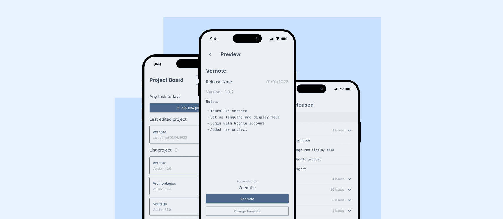
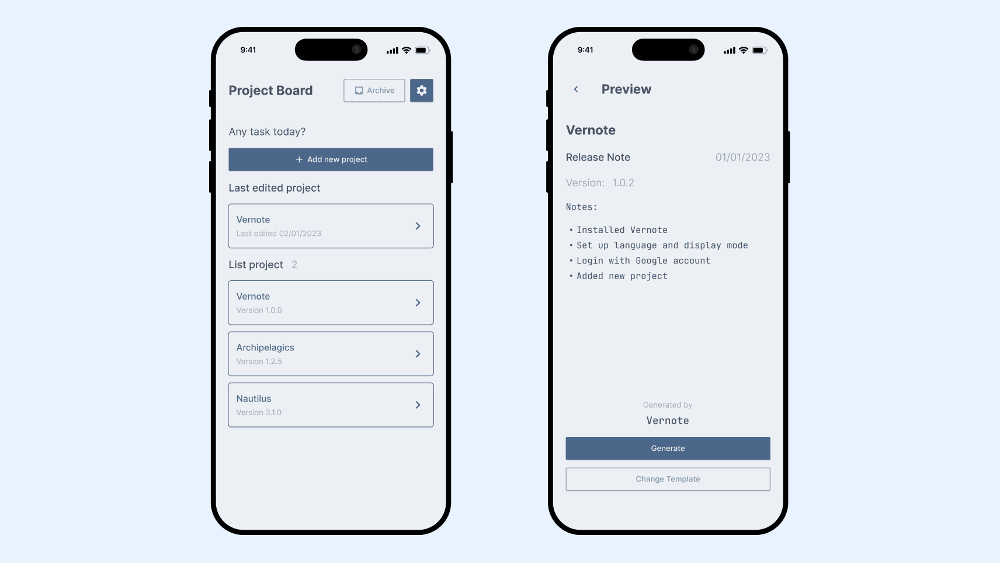
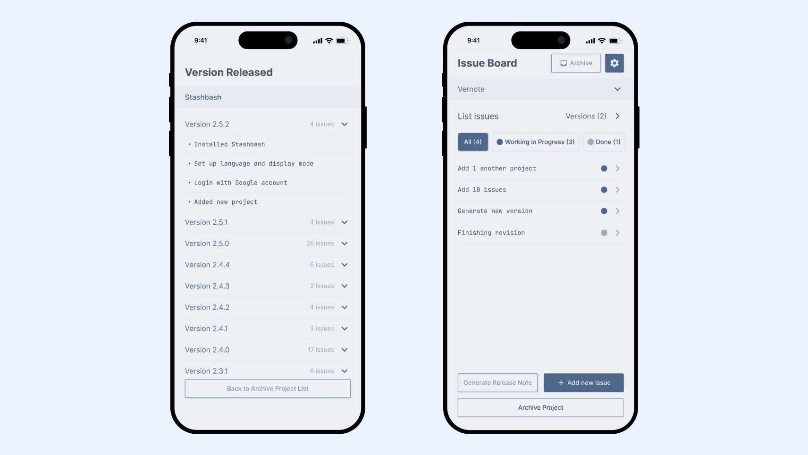

Designing a Unique Note-Taking App for Freelancers’ Needs

CLIENT: This project was initiated by one individual, a professional mobile developer who entrusted me to work on their innovation, an exclusive note-taking application designed specifically for freelancers to document projects over time.
Problem
Generic note-taking apps aren't built for how freelancers actually work — juggling multiple client projects that each need their own progress tracking, revision history, and organized documentation. The client, a mobile developer, wanted a note-taking app purpose-built for this exact workflow.
Process
As UI/UX Designer, I collaborated directly with the client over two months — from initial research and concept development through ideation and testing — to design an app centered on how freelancers actually document and manage client work, not just a generic notes template.
Outcome
A Freelance Workflow Tool, Purpose-Built from the Ground Up
Designed with progress tracking, version history, and per-client documentation categorization — features freelancers won't find in standard note-taking apps.

